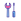
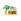

<!doctype html>
<html lang="en">
    <head>
        <meta charset="utf-8">
        <meta http-equiv="X-UA-Compatible" content="IE=edge">
        <meta name="viewport" content="initial-scale=1,user-scalable=no,maximum-scale=1,width=device-width">
        <meta name="mobile-web-app-capable" content="yes">
        <meta name="apple-mobile-web-app-capable" content="yes">
        <link rel="stylesheet" href="css/leaflet.css"><link rel="stylesheet" href="css/L.Control.Locate.min.css">
        <link rel="stylesheet" href="css/qgis2web.css"><link rel="stylesheet" href="css/fontawesome-all.min.css">
        <link rel="stylesheet" href="css/leaflet-search.css">
        <style>
        html, body, #map {
            width: 100%;
            height: 100%;
            padding: 0;
            margin: 0;
        }
        </style>
        <title></title>
    </head>
    <body>
        <div id="map">
        </div>
        <script src="js/qgis2web_expressions.js"></script>
        <script src="js/leaflet.js"></script><script src="js/L.Control.Locate.min.js"></script>
        <script src="js/leaflet.rotatedMarker.js"></script>
        <script src="js/leaflet.pattern.js"></script>
        <script src="js/leaflet-hash.js"></script>
        <script src="js/Autolinker.min.js"></script>
        <script src="js/rbush.min.js"></script>
        <script src="js/labelgun.min.js"></script>
        <script src="js/labels.js"></script>
        <script src="js/leaflet-search.js"></script>
        <script src="data/BatasAdministrasiDesa_1.js"></script>
        <script src="data/SaranaPrasarana_2.js"></script>
        <script>
        var highlightLayer;
        function highlightFeature(e) {
            highlightLayer = e.target;
            highlightLayer.openPopup();
        }
        var map = L.map('map', {
            zoomControl:true, maxZoom:28, minZoom:1
        })
        var hash = new L.Hash(map);
        map.attributionControl.setPrefix('<a href="https://github.com/tomchadwin/qgis2web" target="_blank">qgis2web</a> &middot; <a href="https://leafletjs.com" title="A JS library for interactive maps">Leaflet</a> &middot; <a href="https://qgis.org">QGIS</a>');
        var autolinker = new Autolinker({truncate: {length: 30, location: 'smart'}});
        L.control.locate({locateOptions: {maxZoom: 19}}).addTo(map);
        var bounds_group = new L.featureGroup([]);
        function setBounds() {
            if (bounds_group.getLayers().length) {
                map.fitBounds(bounds_group.getBounds());
            }
        }
        map.createPane('pane_OSMStandard_0');
        map.getPane('pane_OSMStandard_0').style.zIndex = 400;
        var layer_OSMStandard_0 = L.tileLayer('http://tile.openstreetmap.org/{z}/{x}/{y}.png', {
            pane: 'pane_OSMStandard_0',
            opacity: 1.0,
            attribution: '<a href="https://www.openstreetmap.org/copyright">© OpenStreetMap contributors, CC-BY-SA</a>',
            minZoom: 1,
            maxZoom: 28,
            minNativeZoom: 0,
            maxNativeZoom: 19
        });
        layer_OSMStandard_0;
        map.addLayer(layer_OSMStandard_0);
        function pop_BatasAdministrasiDesa_1(feature, layer) {
            layer.on({
                mouseout: function(e) {
                    if (typeof layer.closePopup == 'function') {
                        layer.closePopup();
                    } else {
                        layer.eachLayer(function(feature){
                            feature.closePopup()
                        });
                    }
                },
                mouseover: highlightFeature,
            });
            var popupContent = '<table>\
                    <tr>\
                        <th scope="row">topo_desa</th>\
                        <td>' + (feature.properties['topo_desa'] !== null ? autolinker.link(feature.properties['topo_desa'].toLocaleString()) : '') + '</td>\
                    </tr>\
                </table>';
            layer.bindPopup(popupContent, {maxHeight: 400});
        }

        function style_BatasAdministrasiDesa_1_0() {
            return {
                pane: 'pane_BatasAdministrasiDesa_1',
                interactive: false,
            }
        }
        map.createPane('pane_BatasAdministrasiDesa_1');
        map.getPane('pane_BatasAdministrasiDesa_1').style.zIndex = 401;
        map.getPane('pane_BatasAdministrasiDesa_1').style['mix-blend-mode'] = 'normal';
        var layer_BatasAdministrasiDesa_1 = new L.geoJson(json_BatasAdministrasiDesa_1, {
            attribution: '',
            interactive: false,
            dataVar: 'json_BatasAdministrasiDesa_1',
            layerName: 'layer_BatasAdministrasiDesa_1',
            pane: 'pane_BatasAdministrasiDesa_1',
            onEachFeature: pop_BatasAdministrasiDesa_1,
            style: style_BatasAdministrasiDesa_1_0,
        });
        bounds_group.addLayer(layer_BatasAdministrasiDesa_1);
        map.addLayer(layer_BatasAdministrasiDesa_1);
        function pop_SaranaPrasarana_2(feature, layer) {
            layer.on({

                mouseover: highlightFeature,
            });
            var popupContent = '<table>\
                    <tr>\
                        <td colspan=2><h3>' + (feature.properties['Sarana'] !== null ? autolinker.link(feature.properties['Sarana'].toLocaleString()) : '') + '<h3></td>\
                    </tr>\
                    <tr>\
                        <th scope="row">X</th>\
                        <td>' + (feature.properties['X'] !== null ? autolinker.link(feature.properties['X'].toLocaleString()) : '') + '</td>\
                    </tr>\
                    <tr>\
                        <th scope="row">Y</th>\
                        <td>' + (feature.properties['Y'] !== null ? autolinker.link(feature.properties['Y'].toLocaleString()) : '') + '</td>\
                    </tr>\
                    <tr>\
                        <th scope="row">Deskripsi</th>\
                        <td>' + (feature.properties['Deskripsi'] !== null ? autolinker.link(feature.properties['Deskripsi'].toLocaleString()) : '') + '</td>\
                    </tr>\
                    <tr>\
                        <th scope="row">Jam_Buka</th>\
                        <td>' + (feature.properties['Jam_Buka'] !== null ? autolinker.link(feature.properties['Jam_Buka'].toLocaleString()) : '') + '</td>\
                    </tr>\
                    <tr>\
                        <th scope="row">CP</th>\
                        <td>' + (feature.properties['CP'] !== null ? autolinker.link(feature.properties['CP'].toLocaleString()) : '') + '</td>\
                    </tr>\
                    <tr>\
                        <th scope="row">Fasilitas</th>\
                        <td>' + (feature.properties['Fasilitas'] !== null ? autolinker.link(feature.properties['Fasilitas'].toLocaleString()) : '') + '</td>\
                    </tr>\
                    <tr>\
                        <th scope="row">Pembayaran</th>\
                        <td>' + (feature.properties['Pembayaran'] !== null ? autolinker.link(feature.properties['Pembayaran'].toLocaleString()) : '') + '</td>\
                    </tr>\
                    <tr>\
                        <td colspan="2">' + (feature.properties['Foto'] !== null ? '' : '') + '</td>\
                    </tr>\
                </table>';
            layer.bindPopup(popupContent, {maxHeight: 400});
        }

        function style_SaranaPrasarana_2_0(feature) {
            switch(String(feature.properties['Deskripsi'])) {
                case 'Bengkel':
                    return {
                pane: 'pane_SaranaPrasarana_2',
        rotationAngle: 0.0,
        rotationOrigin: 'center center',
        icon: L.icon({
            iconUrl: 'markers/repair-shop-svgrepo-com.svg',
            iconSize: [15.2, 15.2]
        }),
                interactive: true,
            }
                    break;
                case 'Kuliner':
                    return {
                pane: 'pane_SaranaPrasarana_2',
        rotationAngle: 0.0,
        rotationOrigin: 'center center',
        icon: L.icon({
            iconUrl: 'markers/food 4.svg',
            iconSize: [15.2, 15.2]
        }),
                interactive: true,
            }
                    break;
                case 'Penginapan':
                    return {
                pane: 'pane_SaranaPrasarana_2',
        rotationAngle: 0.0,
        rotationOrigin: 'center center',
        icon: L.icon({
            iconUrl: 'markers/hotel-svgrepo-com (1).svg',
            iconSize: [15.2, 15.2]
        }),
                interactive: true,
            }
                    break;
                case 'Tempat Ibadah':
                    return {
                pane: 'pane_SaranaPrasarana_2',
        rotationAngle: 0.0,
        rotationOrigin: 'center center',
        icon: L.icon({
            iconUrl: 'markers/mosque-svgrepo-com (1).svg',
            iconSize: [15.2, 15.2]
        }),
                interactive: true,
            }
                    break;
                case 'Toko Kelontong':
                    return {
                pane: 'pane_SaranaPrasarana_2',
        rotationAngle: 0.0,
        rotationOrigin: 'center center',
        icon: L.icon({
            iconUrl: 'markers/basket-loaded-svgrepo-com.svg',
            iconSize: [15.2, 15.2]
        }),
                interactive: true,
            }
                    break;
                case 'UMKM':
                    return {
                pane: 'pane_SaranaPrasarana_2',
        rotationAngle: 0.0,
        rotationOrigin: 'center center',
        icon: L.icon({
            iconUrl: 'markers/shop-svgrepo-com.svg',
            iconSize: [15.2, 15.2]
        }),
                interactive: true,
            }
                    break;
            }
        }
        map.createPane('pane_SaranaPrasarana_2');
        map.getPane('pane_SaranaPrasarana_2').style.zIndex = 402;
        map.getPane('pane_SaranaPrasarana_2').style['mix-blend-mode'] = 'normal';
        var layer_SaranaPrasarana_2 = new L.geoJson(json_SaranaPrasarana_2, {
            attribution: '',
            interactive: true,
            dataVar: 'json_SaranaPrasarana_2',
            layerName: 'layer_SaranaPrasarana_2',
            pane: 'pane_SaranaPrasarana_2',
            onEachFeature: pop_SaranaPrasarana_2,
            pointToLayer: function (feature, latlng) {
                var context = {
                    feature: feature,
                    variables: {}
                };
                return L.marker(latlng, style_SaranaPrasarana_2_0(feature));
            },
        });
        bounds_group.addLayer(layer_SaranaPrasarana_2);
        map.addLayer(layer_SaranaPrasarana_2);
        var baseMaps = {};
        L.control.layers(baseMaps,{'Sarana Prasarana<br /><table><tr><td style="text-align: center;"></td><td>Bengkel</td></tr><tr><td style="text-align: center;"></td><td>Kuliner</td></tr><tr><td style="text-align: center;"></td><td>Penginapan</td></tr><tr><td style="text-align: center;"></td><td>Tempat Ibadah</td></tr><tr><td style="text-align: center;"></td><td>Toko Kelontong</td></tr><tr><td style="text-align: center;"></td><td>UMKM</td></tr></table>': layer_SaranaPrasarana_2,' Batas Administrasi Desa': layer_BatasAdministrasiDesa_1,"OSM Standard": layer_OSMStandard_0,}).addTo(map);
        setBounds();
        map.addControl(new L.Control.Search({
            layer: layer_SaranaPrasarana_2,
            initial: false,
            hideMarkerOnCollapse: true,
            propertyName: 'Sarana'}));
        document.getElementsByClassName('search-button')[0].className +=
         ' fa fa-binoculars';
        </script>
    </body>
</html>
